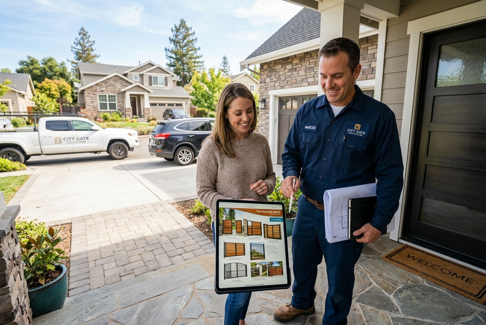

MS, SS, or Aluminum — each material has distinct advantages. This guide helps you make an informed decision for your home.
We work with three premium materials — each selected for specific performance characteristics.
The workhorse of gate fabrication. Strong, versatile, and affordable. Ideal for all gate types, compound walls, and heavy-duty applications.
Premium marine-grade material. Naturally corrosion-resistant with a lustrous finish. The first choice for coastal homes and luxury installations.
Lightweight, naturally rust-proof, and low maintenance. Ideal for window grills, decorative panels, and modern minimalist gate designs.
| Feature | Mild Steel (MS) | Stainless Steel (SS) | Aluminum |
|---|---|---|---|
| Rust Resistance | ✗ Prone to rust Requires coating |
✓ Excellent Natural oxide layer |
✓ Very Good Naturally rust-free |
| Strength | Highest 400–550 MPa tensile |
Very High 515–620 MPa tensile |
Moderate Good for light-medium loads |
| Weight | Heavy 7.85 g/cm³ |
Heavy 7.93 g/cm³ |
Light 2.7 g/cm³ (⅓ of steel) |
| Cost | Budget Friendly Most affordable |
Premium 2–3× cost of MS |
Moderate Between MS and SS |
| Maintenance | High Repainting every 3–5 yrs |
None Wipe-clean surface |
Minimal Occasional cleaning only |
| Workability | Excellent Bends, welds, shapes easily |
Good Harder to weld (TIG required) |
Good Easy extrusion, moderate welding |
| Coastal Suitability | Poor Needs marine coating |
Excellent SS 316 ideal for coastlines |
Very Good Naturally sea-resistant |
| Design Flexibility | Highest 30+ patterns, full scrollwork |
Moderate Tubular, flat, cable designs |
Good Geometric, extruded profiles |
| Best For | Main gates, compound walls, window grills, heavy applications | Balcony railings, staircases, coastal homes, luxury entrances | Window grills, decorative panels, modern lightweight gates |
Advantages
Disadvantages
Advantages
Disadvantages
Advantages
Disadvantages
Our expert recommendations based on application, location, and budget.
Yes, absolutely. Many of our premium projects combine materials — for example, an MS main gate with SS balusters, or aluminum window grills with an SS entrance railing. Our team will advise on aesthetically compatible combinations.
We use ISI-marked SS 304 grade for standard inland applications and SS 316 grade for coastal, high-humidity, or industrial environments. SS 316 has higher molybdenum content, providing superior chloride resistance for seaside homes.
Our powder-coated MS products typically last 5–8 years before requiring a touch-up or recoat. We use high-quality electrostatic powder coating at 60–80 microns thickness. We include a free touch-up kit with every MS installation.
Aluminum is suitable for pedestrian gates and medium-sized vehicular gates. For heavy-duty main vehicular gates (14ft+ wide), we recommend MS or SS for maximum structural integrity. Aluminum is perfect for single-leaf swing gates up to 8ft wide.

Book a free onsite visit and our fabrication specialist will inspect your site, perform laser measurements, and recommend the ideal material (MS, SS 304, or Aluminum) tailored to your location, architectural style, and budget.